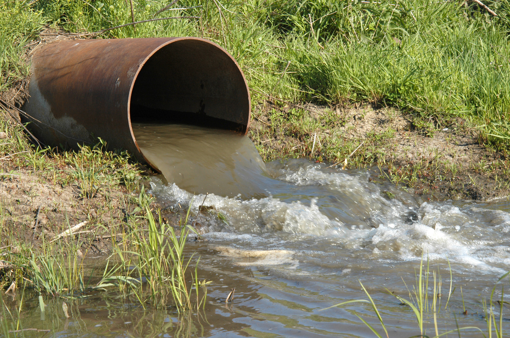
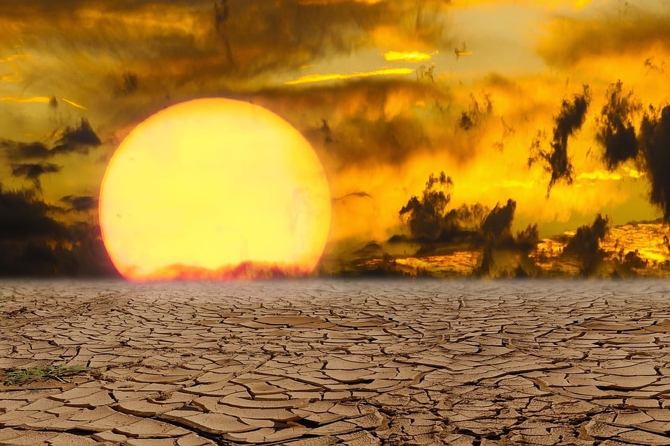
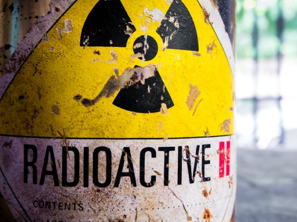

La siembra de nubes puede interferir con el ciclo natural del agua al inducir precipitación en áreas donde normalmente no ocurriría, afectando los patrones de lluvia y nieve y alterando el equilibrio ecológico.
Los productos químicos utilizados en la siembra de nubes pueden contaminar el agua y el suelo si no se utilizan adecuadamente, lo que puede tener efectos adversos en los ecosistemas acuáticos y terrestres.
Los cambios en los patrones de precipitación inducidos por la siembra de nubes pueden afectar la distribución y disponibilidad de recursos para las especies de plantas y animales, con consecuencias negativas para la biodiversidad local.
Debido a la complejidad de los sistemas climáticos y ecológicos, los efectos a largo plazo de la siembra de nubes pueden ser difíciles de predecir, lo que podría conducir a consecuencias imprevistas y desconocidas para el medio ambiente.
